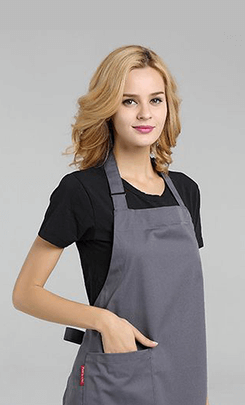

关于我们
 About Us
About Us
关于我们
早在1929年，当时的雀巢集团董事长Louis Dapples接到了来自前任雇主南美法国与意大利银行（the Banque Française et Italienne pour l’Amérique du Sud）的一项求助任务。当时，继华尔街股灾和咖啡价格崩盘后，该银行位于巴西的仓库中有许多过剩库存咖啡。
需要完成的任务就是雀巢是否能够将这些库存变为“可溶性固体咖啡”，用于售卖。 为此，化学家马克思·莫根特尔（Max Morgenthaler）加入雀巢团队，同研究人员一道寻找解决方案。经过三年的研究，他们发现牛奶咖啡（café au lait）——咖啡中融入牛奶和糖，再转化为粉状，能够更长期地保持香醇。然而，当时这种粉状颗粒不易溶解，此外，牛奶和糖也为生产增加了挑战。
莫根特尔博士发现，保存在甜牛奶当中的咖啡，相较于不甜的牛奶来讲，口味与香醇口感更佳。他还发现，在高温高压下曝露的咖啡，保存时间更长。
产品介绍
Produt

-
拿铁咖啡
拿铁咖啡需要一小杯意大利浓缩咖啡和一杯牛奶，拿铁咖啡中牛奶多而咖啡少。拿铁咖啡做法极其简单，就是在刚刚做好的意大利浓缩咖啡中倒入接近沸腾的牛奶。一般的拿铁咖啡的成分是三分之一的意式浓缩咖啡Espresso加三分之二的蒸鲜奶，一般不加入奶泡。它与卡布奇诺Cappuccino相比，有更多鲜奶味道。发展2019年，事实上，加入多少牛奶没有一定的规定，可依个人口味自由调配。

-
卡布基洛
卡布基诺【Cappuccino】最早源于意大利，是意大利一种最享盛名的花式咖啡，意大利人发现，浓缩咖啡、牛奶和奶泡混合后，颜色就像是修道士所穿的深褐色道袍，于是他们灵机一动，僧侣的头巾卡布基诺就这样变成了咖啡的名称。

-
摩卡咖啡
摩卡咖啡其历史要追溯到咖啡的起源。它是由意大利浓缩咖啡、巧克力酱、鲜奶油和牛奶混合而成，摩卡得名于有名的摩卡港。十五世纪，整个中东非咖啡国家向外运输业不兴盛，也门摩卡是当时红海附近主要输出一个商港，当时咖啡主要是集中到摩卡港再向外输出的非洲咖啡，都被统称摩卡咖啡。而新兴的港口虽然代替了摩卡港的地位，但是摩卡港时期摩卡咖啡的产地依然保留了下来，这些产地所产的咖啡豆，仍被称为摩卡咖啡豆。
公司团队
Our team

-
贾斯汀·比伯
Justin Bieber

-
查理·普斯
Charlie Phelps

-
艾薇儿·拉维尼
Avril Lavigne
- 
-
泰勒·斯威夫特
Taylor Swift
联系我们
Contact us
-
咨询热线
information hotline
重庆：+86 023-867-7848
（9:30——18：30北京时间）
-
咨询热线
information hotline
重庆：+86 023-867-7848
（9:30——18：30北京时间）
-
咨询热线
information hotline
重庆：+86 023-867-7848
（9:30——18：30北京时间）